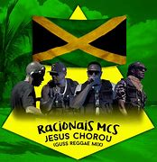

História da Banda
A banda foi formada em 1988 por Mano Brown Ice Blue Kl Jay Edy Rock.
Desde então, a banda tem conquistado o coração dos fãs com suas músicas emocionantes e performances energéticas.
Membros
-
Mano Brown
Mano Brown Nascimento: 22 de abril de 1974
em São Paulo, Brasil
Nome Completo: Pedro Paulo Soares Pereira Apelido: Mano Brown Ocupação: Rapper,
compositor, produtor musical e
ativista social -
Ice Blue Nascimento: 19 de janeiro de 1974,
em São Paulo,
Brasil
Nome Completo: Marco Túlio Pires de Barros
Apelido: Ice Blue
Ocupação: Rapper, compositor
e produtor musical -
Edy Rock Nascimento: 22 de setembro de 1974
em São Paulo, Brasil
Nome Completo: Edivaldo Alves da Silva
Apelido: Edy Rock
Ocupação: Rapper, compositor
e produtor musical